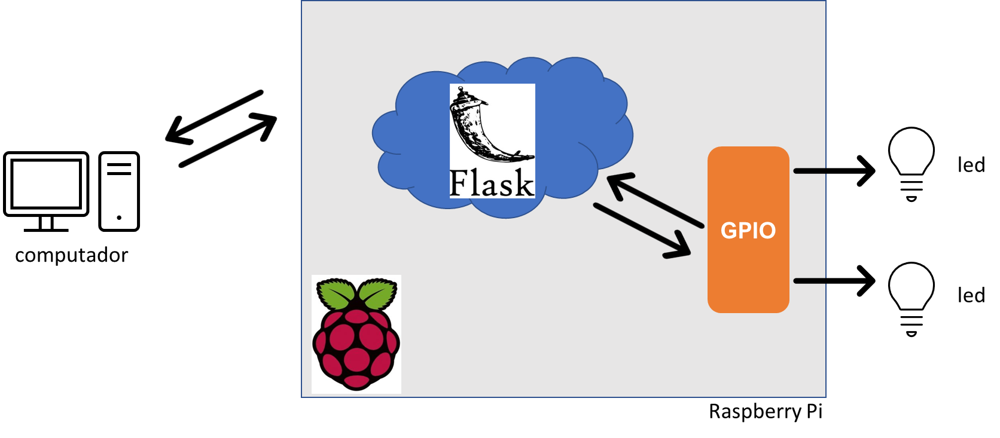

Lab08

O que vamos ver neste lab?¶
- Raspberry Pi:
- Conhecendo os pinos
- Usando a biblioteca RPI.GPIO
- Montando um Webserver em Flask
Progress
Continuar...
Conhecendo os pinos da Raspberry Pi¶
Podemos utilizar a Raspberry Pi para conectar sensores e atuadores, de forma semelhante como foi feito utilizando o Arduino, para isso utilizamos os barramento de pinos da Raspberry Pi chamado de GPIO (General Purpose Input Output). Ao todo são 40 pinos (para RPI 2 ou superior) e de forma geral cada pino possui uma função ou caracteristica especifica.
Warning
Cuidado: Devemos ter atenção para não conectar os perifericos na placa de forma incorreta. Existe risco de queimar a Raspberry Pi.
A imagem abaixo é um guia simples para cada pino. Parece complicado na primeira vez, mas é tranquilo.

Vamos conhecer o que é cada pino:
- Pinos de Alimentação:
- 3.3V (ao todo 2 pinos)
- 5V (ao todo 2 pinos)
- GND/Ground/0V (ao todo 8 pinos)
- Pinos de interface:
- GPIO (General purpose input and output): São os pinos de entrada/saida. A tensão de saida é de 3.3V.
- I2C/SPI/UART: Protocolos de comunicação especificos utilizados para realizar a interface módulos epecificos com a Raspberry Pi.
Warning
Atenção: Observe a correlação dos pinos para não ligar invertido.

Exercise
Quantos pinos GPIO estão disponiveis?
Progress
Continuar...
Configurando os GPIOs¶
No final do lab07 montamos um simples pisca led e programamos configurando os valores dos registradores. Existem formas mais simples de programar os GPIOs da rasbperry pi, vamos programar em Python :)
Vamos utilizara biblioteca RPI.GPIO, que permite de forma simples configurar e usar os GPIOs com script em Python, vamos preparar o nosso ambiente de desenvolvimento:
Exercise
-
Inicialize a Raspberry Pi. (modo Desktop ou SSH).
- Se tiver dúvida de como fazer, volte para o lab07.
-
Abra o terminal da raspberry pi.
-
Certifique-se de estar com acesso a internet.
No terminal da raspberry pi, atualize os repositórios:
sudo apt update
Em seguida, tente instalar o pacote RPi.GPIO: A documentação da biblioteca está disponivel no aqui.
sudo apt install rpi.gpio
Se ainda não estiver instalado, será instalado. Se já estiver instalado, será atualizado se uma versão mais recente estiver disponível.
Progress
Continuar...
Conhecendo a biblioteca RPi.GPIO¶
É uma biblioteca simples de usar e vamos ver as principais funções da RPi.GPIO através do código de exemplo abaixo:
-
GPIO.setmode()= Define o modo de acesso aos pino da raspberry pi, existem 2 modos de definir a mesma coisa:- GPIO.BOARD = Posição física do pino na raspberry pi
- GPIO.BCM = Numero após GPIOxx
exemplo: BOARD 11 = GPIO17
-
GPIO.setup()= Define a função do pino, entrada (GPIO.IN) ou saida (GPIO.OUT) -
GPIO.output()= Define o estado do pino definido como saida em nivel logico baixo (GPIO.LOW) ou alto (GPIO.HIGH) -
GPIO.input()= Faz a leitura do estado do pino definido como entrada. Geralmente quando usamos um pino como entrada configuramos no setup o parametro pull_up_down (como exemplo: GPIO.setup(18, GPIO.IN, pull_up_down=GPIO.PUD_UP))
Exercise
Monte o circuito abaixo:

- No terminal da RPI, digite:
cd ~
mkdir src
cd src
touch blinkled.py
- Criamos um diretorio chamado src e um arquivo python chamado blinkled.py
- Abra o arquivo blinkled.py e escreva o código abaixo.
- Para abrir o arquivo digite: nano blinkled.py
- Após digitar o código python, salve e feche o arquivo: Ctlr+X >>> Y
-
Vamos rodar nosso código python, no terminal digite:
- python blinkled.py
-
Se tudo deu certo, o led está piscando. :)
- para interromper o código aperte Ctrl+C.
Warning
Os 2 códigos realizam a mesma função, a diferença está apenas no setmode. Escolha um dos códigos para testar.
import RPi.GPIO as GPIO ### import da biblioteca gpio
import time
# usando o a posição fisíca do pino na raspberry pi
GPIO.setmode(GPIO.BOARD)
# configura o pino fisico 11 como saida
GPIO.setup(11, GPIO.OUT)
whille True:
# escreve no pino 11 nivel logico alto
GPIO.output(11, GPIO.HIGH)
time.sleep(1) # delay de 1s
# escreve no pino 11 nivel logico baixo
GPIO.output(11, GPIO.LOW)
time.sleep(1) # delay de 1s
GPIO.cleanup() # Limpa configuração finaliza o programa
import RPi.GPIO as GPIO ### import da biblioteca gpio
# usando o numero após GPIOxx da raspberry pi
GPIO.setmode(GPIO.BCM)
# configura o GPIO17 como saida
GPIO.setup(17, GPIO.OUT)
whille True:
# escreve no GPIO17 nivel logico alto
GPIO.output(17, GPIO.HIGH)
time.sleep(1) # delay de 1s
# escreve no GPIO17 nivel logico baixo
GPIO.output(17, GPIO.LOW)
time.sleep(1) # delay de 1s
GPIO.cleanup() # Limpa configuração finaliza o programa
Agora que já entendemos a estrutura básica do script python, faça os exercicios abaixo para praticar
Exercise
Semáfaro de transito:
- Monte um circuito com 3 leds (1 verde, 1 amarelo, 1 vermelho);
- crie um novo script chamado semaforo.py;
- Escreva um código que irá acender os leds na sequência e intervalo:
- Verde (5segundos)
- Amarelo (3segundos)
- Vermelho (6segundos)
- loop (volta para o verde)
Exercise
leitura de botão e Led:
- Monte o circuito:

- Escreva um código que:
- Enquanto nenhum botão for pressionado, os leds ficam apagados;
- Se o botão1 for pressionado:
- os leds acendem na sequência: Verde - Amarelo - Vermelho
- Se o botão2 for pressionado:
- os leds acendem na sequencia: Vermelho - Amarelo - Verde
Dica: Geralmente quando usamos algum pino como entrada configuramos no setup o parametro pull_up_down (como exemplo: GPIO.setup(18, GPIO.IN, pull_up_down=GPIO.PUD_UP) ou GPIO.setup(18, GPIO.IN, pull_up_down=GPIO.PUD_DOWN).
Exercise
Sensor de temperatura: Para quem tiver curiosidade pode dar uma olhada como utilizar o sensor de temperatura DTH11 neste link.
Progress
Continuar...
Montando um Webserver em Flask¶
Vamos montar um webserver na raspberry pi com flask. A ideia deste exemplo é controlar por um navegador web o status de um led entre ligado e desligado:

Instalando o Flask e configurando o ambiente¶
No terminal da raspberry pi, atualize os repositórios:
sudo apt update
Instale os pacotes do flask
sudo apt-get install python3-flask
Agora vamos criar nossa arvore de projeto:
- webserver
- static
- index.css
- templates
- index.html
- app.py
No terminal da raspberry pi, digite:
cd ~
mkdir webserver
cd webserver
mkdir static templates
ls
Vamos criar o app.py. No terminal da raspberry pi, digite:
nano app.py
Com o editor nano aberto digite:
'''
Arnaldo Viana
'''
import RPi.GPIO as GPIO
from flask import Flask, render_template, request
app = Flask(__name__)
GPIO.setmode(GPIO.BCM)
GPIO.setwarnings(False)
#define actuators GPIOs
ledRed = 2
#initialize GPIO status variables
ledRedSts = 0
# Define led pins as output
GPIO.setup(ledRed, GPIO.OUT)
# turn leds OFF
GPIO.output(ledRed, GPIO.LOW)
@app.route("/")
def index():
# Read GPIO Status
ledRedSts = GPIO.input(ledRed)
templateData = {
'ledRed' : ledRedSts,
}
return render_template('index.html', **templateData)
@app.route("/<deviceName>/<action>")
def action(deviceName, action):
if deviceName == 'ledRed':
actuator = ledRed
if action == "on":
GPIO.output(actuator, GPIO.HIGH)
if action == "off":
GPIO.output(actuator, GPIO.LOW)
ledRedSts = GPIO.input(ledRed)
templateData = {
'ledRed' : ledRedSts,
}
return render_template('index.html', **templateData)
if __name__ == "__main__":
app.run(host='0.0.0.0', port=80, debug=True)
show! Salve e feche o editor nano. Ctrl+X >> Y
Vamos criar a pagina html index.html. No terminal da raspberry pi, digite:
cd templates
nano index.html
Com o editor nano aberto digite:
<!DOCTYPE html>
<head>
<title>Webserver</title>
<link rel="stylesheet" href='../static/index.css'/>
</head>
<body>
<h2> Controle LED </h2>
<h3> RED LED ==> {{ ledRed }} ==>
{% if ledRed == 1 %}
<a href="/ledRed/off"class="button">TURN OFF</a>
{% else %}
<a href="/ledRed/on" class="button">TURN ON</a>
{% endif %}
</h3>
</body>
</html>
show! Salve e feche o editor nano. Ctrl+X >> Y
Vamos criar o arquivo de estilo css index.css. No terminal da raspberry pi, digite:
cd ..
cd static
nano index.html
Com o editor nano aberto digite:
body {
background: blue;
color: yellow;
}
.button {
font: bold 15px Arial;
text-decoration: none;
background-color: #EEEEEE;
color: #333333;
padding: 2px 6px 2px 6px;
border-collapse: separete;
border-spacing: 0;
border-top: 1px solid #CCCCCC;
border-right: 1px solid #333333;
border-bottom: 1px solid #333333;
border-left: 1px solid #CCCCCC;
}
show! Salve e feche o editor nano. Ctrl+X >> Y
Hora de testar¶
Vamos testar nosso webserver simples.
No terminal da raspberry pi, digite:
cd ..
sudo python app.py
Deixe o flask rodando na raspberry e no computador ou no smartphone (Deve estar na mesma rede da raspberry), abra o navegador web e digite o ip da raspberry pi. O resultado esperado é abrir uma pagina web e controlar o led.
Exercise
Compreenda o código app.py e monte o circuito adequado para conseguir visualizar o led acender e apagar.
Exercise
Altere o código app.py e adicione mais 2 led e 2 botões (totalizando 3 leds, 2 botões), lembre-se de adaptar os arquivos HTML para exibir no frontend os status.
Exercise
Aproveite os seus conhecimentos web e proponha melhorias de UI/UX para o exercicio anterior.